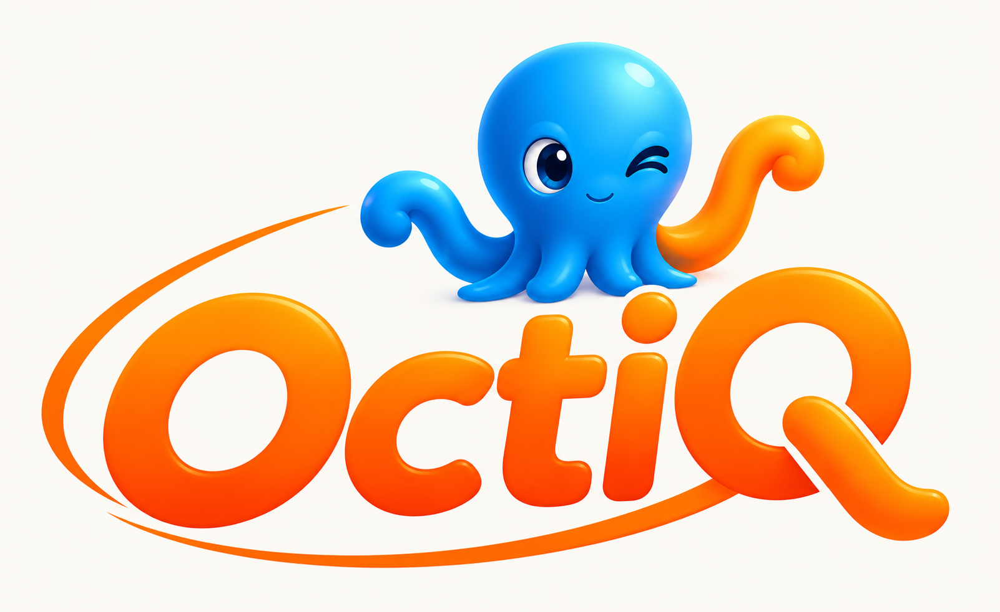

01 / WORLD
التجارة
أدوات لإدارة أنشطة البيع، المنتجات، المخزون، نقاط البيع، والعمليات اليومية بحسب طبيعة النشاط.
اكتشف المجال ↗OCTIQ رؤية لمنظومة رقمية تجمع الأنشطة التجارية والشركات والمهنيين وخدمات التوصيل والعملاء في تجربة أكثر اتصالًا ووضوحًا.

التجارة الأشخاص الخدماتتعمل الأنشطة اليومية غالبًا عبر أدوات منفصلة: البيع في مكان، إدارة العمل في مكان آخر، والخدمات والتواصل في مسارات لا تتصل دائمًا ببعضها.
تسعى OCTIQ إلى بناء تجربة أكثر ترابطًا؛ تساعد كل فئة على إنجاز مهامها، وتفتح المجال لتبادل المعلومات والخدمات حيث يكون ذلك مفيدًا.
لكل عالم احتياجاته وأدواته، لكن قيمته تكبر عندما يستطيع الاتصال ببقية المنظومة ضمن صلاحيات واضحة وتجربة سهلة.
أدوات لإدارة أنشطة البيع، المنتجات، المخزون، نقاط البيع، والعمليات اليومية بحسب طبيعة النشاط.
اكتشف المجال ↗مساحة لاحتياجات الشركات والفرق، وربط فرص العمل بالأشخاص المناسبين ضمن مسارات منظمة.
اكتشف المجال ↗ربط الحرفيين والتقنيين ومقدمي الخدمات بالاحتياجات والطلبات المناسبة لمهاراتهم.
اكتشف المجال ↗تسهيل حركة الطلبات وربط المتاجر والعملاء ومقدمي خدمات التوصيل ضمن تدفق واضح.
اكتشف المجال ↗نقطة وصول موحدة لاكتشاف الخدمات والتعامل مع الأنشطة والأشخاص ضمن تجربة أكثر بساطة.
اكتشف المجال ↗المتجر الصغير والمطعم والمخبزة والمورد لا يعملون بالطريقة نفسها. لذلك تتجه OCTIQ إلى أدوات تناسب تفاصيل كل نشاط، مع الاستفادة من أساس تجاري مشترك بدل تشتيت التجربة إلى علامات منفصلة.
تختلف الواجهات وسير العمل بحسب النشاط، بينما تبقى الهوية والتجربة الأساسية متسقتين.
هذه خريطة للمجالات المستهدفة وليست تأكيدًا بأن كل نشاط متاح بالفعل.
المنظومة لا تتعلق بالشكل فقط. القيمة الحقيقية هي أن تساعد المستخدم على إدارة عمله بوضوح، وتقليل التكرار، والوصول إلى المعلومات التي يحتاجها.
تجربة بيع واضحة وسريعة، مع مسارات ملائمة لطبيعة المتجر أو النشاط.
تنظيم بيانات المنتجات والكميات والأسعار، مع إمكانية دعم الباركود والفواتير بحسب النشاط.
ربط المهام والطلبات والأشخاص، وتوفير رؤية أفضل للعمليات اليومية.
واجهات وأذونات مصممة لتناسب دور المستخدم، مع مراعاة سهولة الاستخدام.
تصور لتكامل التجارة والتوصيل والخدمات والشركات بدل عمل كل جزء بمعزل عن الآخر.
رؤية لمساعد يسهّل الوصول إلى وظائف المنظومة والمعلومات، مع ضوابط واضحة لصلاحياته.
يجب أن تكون التكنولوجيا مفيدة قبل أن تكون معقدة. لذلك تركز الرؤية على الوضوح، وسهولة التعلم، وتجربة متسقة عبر الأجهزة والفئات المختلفة.
OCTIQ مشروع يتطور على مراحل. نميّز بين ما تم بناؤه أو اختباره، وما يجري تطويره، وما يزال ضمن الرؤية المستقبلية.
العمل على أساس تقني وتجارب متخصصة بحسب الأنشطة، مع إعادة استخدام المكونات المشتركة بدل تكرارها.
تطوير تدريجيتطوير واجهات عملية، ودعم سير العمل، وتحسين تجربة الأجهزة والبيئات المختلفة.
ضمن خطة التطويرربط المزيد من العوالم والخدمات والبيانات عندما تصبح البنية والعمليات جاهزة لذلك.
رؤية مستقبليةاستكشاف مساعد ذكي يوجّه المستخدم ويساعده في فهم المعلومات وإنجاز المهام ضمن حدود آمنة وواضحة.
رؤية مستقبليةالمراحل أعلاه تصف اتجاه التطوير، ولا تعني أن جميع الميزات المذكورة متاحة حاليًا.
OCTIQ مشروع تقني يهدف إلى تبسيط إدارة الأنشطة وربط احتياجات الناس والأعمال ضمن منظومة واحدة. يبدأ العمل بفهم التفاصيل الحقيقية لكل مجال، ثم بناء أدوات عملية قابلة للتوسع.
تواصل لمناقشة المشروع ↗للاستفسارات أو الشراكات أو تبادل الأفكار حول OCTIQ، يسعدني التواصل معك.